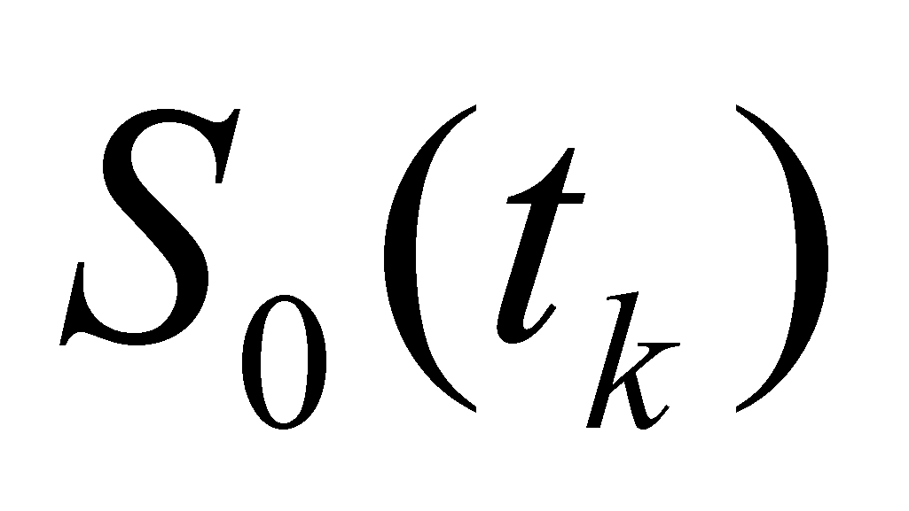
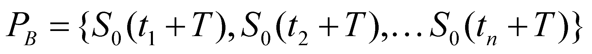

|
|
|
We have seen in the section focused on the concatenated SEP that any specific and individual process may be represented as a succession (series) of even elementary processes, in other words, any process of this kind is a distribution with temporal support of some even variations of state.
The series of the reference states18 (S0 states) which deploys certain variations within their values, contains a finite n number of such objects in case of a finite process PA (with temporal support):
(4.7.1)
The time interval , that is the temporal support of the process PA, is also known as the duration of that particular process, and the state ,is called the process phase at tk moment. If the final state of a process PA is the same with the initial state of other process PB, with the same temporal states distribution:
 (4.7.2)
a temporal concatenation of the two processes takes place. In this case, the processes PA and PB made-up from the same number of S0 states with the same distribution and with the same T duration, are instances (realizations) of the same class of abstract objects known as periodical (synonym - cyclical or repetitive) processes with A(t) distribution and with T period (the invariant duration of some repetitive concatenated processes is called period).
A(t) distribution of S0(t) states is also known as the values distribution of the variable attribute, and according to a graphical representation, this distribution becomes the form of that repetitive process. For instance, as regards the processes in which variations of the electric charges within an electronic circuit may occur, these periodical variations are also known as waveforms, and the form of these waves may be rectangular, triangular, sinusoidal, so on. As for the periodical processes class, a very important attribute is the period’s inverse, attribute known as frequency and which has a number of periodical processes in a time unit, as an associated semantic value.
 (4.7.3)
(4.7.3)
In the next chapters, we are about to see that the frequency, together with the space and time, is one of the fundamental support ranges of the distributions used by IPS for the perception of real periodical processes. The hearing organ of the advanced bio-systems (mammals, birds) consists in a multi-channel analyzer - parallel in the frequency range - of the periodical pressure variations from the outside medium, which, under the form of recognizable sounds, may be signals with associated semantic value.
18 Series which represents the primary distribution with temporal support of the variable amount.
Copyright © 2006-2011 Aurel Rusu. All rights reserved.